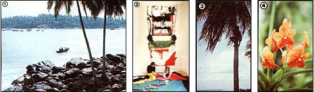
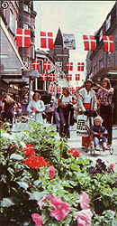

Though 1981 has barely arrived, we're already deep into organizing MOTHER'S 1982 tours. And you should be thinking ahead, too . . . because now's the time to begin planning to join one of the following learning adventures: excursions that will visit some of the planet's most beautiful and exotic areas.
If, for instance, you'd like to get acquainted with top craftspeople in Finland and Denmark . . . experience life in the Danish isles . . . stay in snug, country inns . . . visit Hans Christian Andersen's birthplace and Hamlet's old homestead, Elsinore . . . bicycle through storybook villages . . . and find inspiration in craft galleries and museums, we can offer you all this (and more!) on MOTHER'S Scandinavian Crafts Tour that'll run from May 5 to 22, 1981!
The trip - which has been over a year in the planning - is under the direction of Don Willcox, who's made Scandinavia his home for almost a decade and has written 14 books on that region's crafts. The tour will cost $1,850 (a $100 deposit will hold a place), and the fee includes round-trip airfare from New York, land costs, daily breakfasts, and some lunches and dinners.
Down through the centuries, Sri Lanka (the words mean "resplendent land" in ancient Sanskrit) has been called many things. Ceylon is probably the most familiar, but one earlier name, "Serendip" - which provided the inspiration for the word "serendipity" - seems especially appropriate . . . because no matter what you expect from this large, friendly island off India's southern tip, you're sure to be delightfully surprised by totally unforeseen pleasures, too!
MOTHER'S cosponsor for the tour will be Journeys, an organization which - through its Earth Preservation Fund - supports small-scale, community-based conservation projects in many parts of the world. This particular 21-day trip (from July 4 to 24, 1981) will emphasize cross-cultural contacts and visits to Sri Lanka's rural areas ... where Buddhism flourishes in its purest form.
This is also where - in the third century B.C. - King Devanampiyatissa established the world's first wildlife reserve, a sanctuary which can still be visited and enjoyed today!
The attractions that we'll visit include the spectacular ruins of Polonnaruwa, the twelfth century's finest Asian city . . . Lahugala, one of the best places in the world to find concentrations of wild elephants . . . Rahunu National Park, an isolated refuge for many rare species of birds and animals . . . and the Royal Botanical Gardens in romantic Kandy - the last capital of the Sinhala kings - where we'll also see the world's largest orchid collection.
Our guides - including members of the Wildlife and Nature Protection Society of Sri Lanka - will provide insights into the ecology of the lovely island . . . and money from our trip will be used to help support such projects as nature education in schools, the establishment of sea turtle hatcheries, and a campaign to preserve the island's substantial (but diminishing) wild elephant herds.
Most of our accommodations will be in small hotels, but - occasionally - we'll stay overnight in tents or bungalows . . . and many of our days will be spent on the golden sands of palm-lined, deserted beaches. A visit to this "conservationists' vision of paradise" can be yours . . . for $2,470, including round-trip airfare from New York, land costs, accommodations, and meals. And, since the tour to the isle of smiles is open to only 15 people, send us a $300 deposit right away to be sure you won't be left out.
Because of the rising prices of travel in Europe, our original plans for a trip to explore solar energy in England and France (cosponsored with Jordan College) have been changed. Now you can choose either a nine-day excursion to England (August 22-30, 1981) or a separate nine-day visit to France (August 29 to September 6) . . . or you can combine the two trips.
In England we'll attend the International Solar Energy Society Congress and Exhibition at Brighton and visit solar installations, go sightseeing in London, and enjoy a Shakespeare play at Stratford-on-Avon. The tour of France will take us to Paris, deep into the Pyrenees, and along the French Riviera . . . all the while investigating some of the world's most advanced uses of solar energy and meeting top experts in the field (including the inventor of the Trombe wall, Dr. Felix Trombe).
The England and France segments are $1,100 each, including airfare from Chicago, first-class hotels, land costs, and breakfasts . . . and a 17-day tour of the two countries will cost $2,100. Send a $200 deposit, to hold a spot on either of the one-country trips or the two-nation package . . . or write to us for more details.
If you like the kind of vacation that relaxes the body while stimulating the mind, you'll love our November 27 to December 11, 1981 trip to the South Seas . . . which will include ecology workshops with Anne and Paul Ehrlich, and John and Cheryl Holdren.
Except for a couple of days in Tahiti, this two-week "tour that teaches" will be spent amid the legendary beauty of Bora Bora (a spot which should fit everyone's fantasy image of the perfect South Sea island) and Raïatéa (the ancient Polynesian cultural/religious capital that's called "the favorite of the gods").
Each morning, we'll step out of our thatched (but luxurious) bungalows . . . then don our snorkeling gear . . . slip into warm, sparkling-clear waters. . . and - under the direction of our knowledgeable tour leaders - study the beauty, diversity, and behavior of colorful reef fishes.
The afternoons, for the most part, will be unstructured . . . allowing you time to explore the enchanting islands (the use of bicycles and outrigger canoes is included in the tour package!), or - if you prefer - to take an excursion to outlying Toopua, where you can choose to be left, with a picnic lunch, to play "Robinson Crusoe for a day" on the uninhabited island's white sands.
The price of this unique experience - including airfare from Los Angeles, land costs, lodging, and the majority of the meals, plus the seminars - is estimated at $2,300, and a $100 deposit is required. But don't procrastinate . . . this tour is already half full!
For our first trip of 1982 ( January 25 to February 17), MOTHER will again work with the folks at Journeys to put together a special 21-day trek through Nepal's Arun Valley, which - plunging between Everest (29,028 feet) and Kanchenjunga (28,208 feet) - is the deepest mountain pass in the world. In fact, no portion of the Himalayas is more dramatically scenic or ecologically diverse than this secluded vale.
Our route through the rugged region will follow a high ridge - once a major trade route but now abandoned - between Tibet and India. The area is seldom visited by foreigners or, in fact, by local people, who fear the yeti . . . which is often sighted here, particularly in winter when the animal is driven to lower elevations by the cold. We'll also keep a sharp eye out for that other elusive Arun resident, the rare snow leopard. Then - when the weather becomes too forbidding on the trail - we'll descend into the warm valley to visit with people of many different cultures who live in well-functioning, self-sufficient communities.
The all-inclusive estimated (subject to airfare changes) cost of the exciting expedition is $2,785, and a $300 deposit will reserve your place. For more details, write to Mother's Tours (P.O. Box 70, Hendersonville, North Carolina 28791) for a brochure on this or any of our trips. And if you want to be sure you won't miss out on the excursion of your choice, send your deposit (half of which is refundable if you cancel) by certified check or money order to the above address today!
|
 Sri Lanka Photos by Wil Weber , Scandinavian Photos Courtesy of The Finnish Tourist Board [1] A native boat glides over a Sri Lanka Bay. [2] Fiber arts play a large role in Scandinavian crafts. [3] Boys in search of coconuts will be a common sight in both the South Seas and Sri Lanka. [4] So will some of the world's most beautiful and exotic tropical flowers, such as these orchids. |
 Our Scandinavian travels will allow time enough to browse through the wonderful shops in Helsinki and Copenhagen |
Even the most common cooking utensils become an art form in Finland |